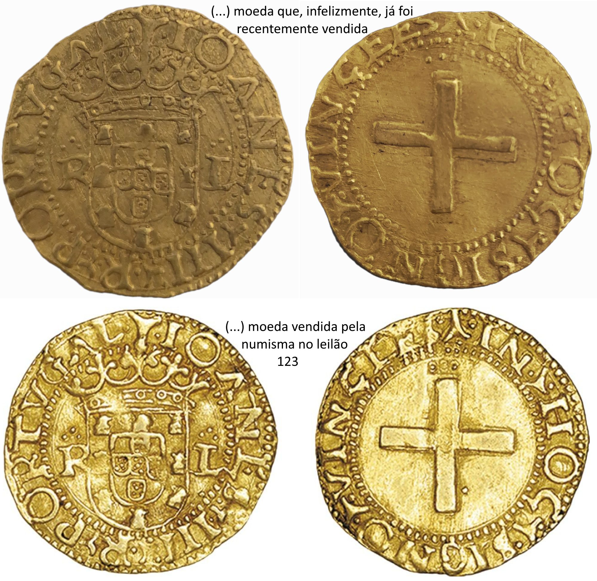

A OPINIÃO DE JOSIX
A OPINIÃO DE JOSIX No submundo dos fóruns de numismática, emergindo das cinzas de uma estrutura de conhecimento que foi substituída pela neo-exegese, dedicada à repristinação da tradição de qualidade e à maquilhagem das…